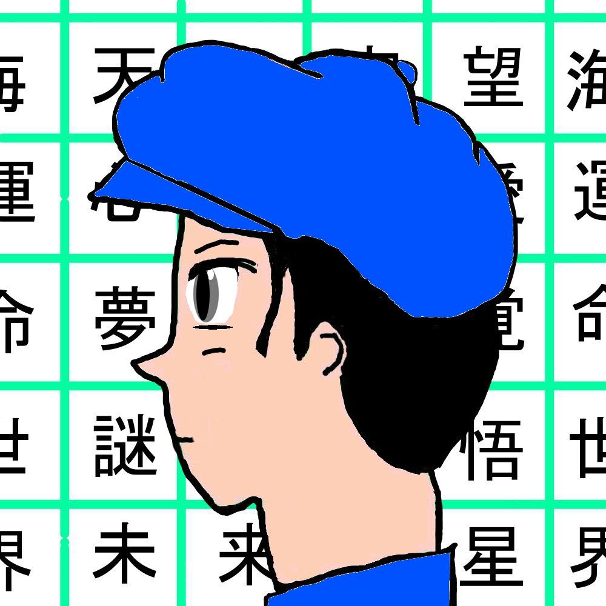

| 平穏で健やかで、時々変化のある人生 デイズ・オブ・フューチャー・パスト | |
| 小椋 祐介 | |
| omelet books (2014) | |
平穏で健やかで、
時々変化のある人生
小椋 祐介
オムレツ出版
偉大なるSF作家
アーサー・C・クラーク氏
藤子・F・不二雄氏
過ぎ去りし彼等に想いを寄せて
皆さん、ごきげんよう。
これから始める話にお時間を頂ける事を光栄に思います。 貴方との出会いに乾杯。
私の名前は入香（イリカ）ジュンイチロー。 ４５才の会社員。
性格はマイペースで趣味は読書。 少し神経質な面がある。この様な性格なので当然かもしれないが、独身。 友人も少くない方だ。だが、それなりに満足している。
それに先日も恋人と別れたばかり。 原因は大した事ではないが向こうの言い分としては「宇宙旅行なんかに ５００万使うなんてあなた馬鹿みたい！」 なのだそうだ。
まるで男のロマンを分かっちゃいない。 だから、当然さよならだ。
人生は選択の連続であり、迷う時は自分の心に従うのだ。
例え、それが人から間違っていると指摘されたとしても後悔は無いのだから。 後悔は心の中の荷物でしかない。 私は生涯 『平穏で健やかで、時々変化のある人生』を送る事を目指している。 だから今は実に気分が良い。 彼女とは進む人生が違うのだ。
新しいスタートが切れた。
そして私が暮す時代についても少し説明をしておこう。
今は２０３０年代半ば季節は秋に入ったばかり。 世界人口は８０億人を突破し反対に日本人口は１億人を割り込んだ。 子供の割合はその中の１割にも満たない。
つまり日本には殆ど大人しか居ない事になる。 きっと遊園地も大人ばかりで溢れている事だろう。 マウスも大変だろうな。
原因の一つはこれまで根強くあった結婚観の崩壊だ。 人口が減る中、 女 性の社会的躍進があり、彼女達は自由と経済力を手に入れた。
そして、その中で女性の総理大臣は誕生した。 もう家庭の中だけに幸福を求める必要は無いのだ。
更に医療の発展も手伝って平均寿命は９０才を超えた。
実に私の性格に合った良い時代になったと思っている。
日本経済は安定していて中でも宇宙観光旅行が収入源の一角を担う様になって来ている。 旅費はまだまだ高額ではあるが会社員でも貯金をしていれば手の届く所まで来ているのだ。 私も先月ツアーを予約して来た所だ。
出発は明日、本当に楽しみだ。 男のロマン、フロンティア精神、 ＳＦの世界。 よし旅行の仕度は大体整ったかな。
一応、オーブ６で天気とニュースをチェックしておこう。
オーブ６とは透明で自由に変形出来るディスプレイを筒状に丸めると電話機にもなる通信端末だ。
落とすと見つけるのが大変なので柄の入ったフィルムを貼った方が良い。
まあ、私は余り、流行物には興味がないので何でも良いのだが。
「......対策委員会は先日より本格的に宇宙ゴミの対応に乗り出しました。 予算は......」
「......東京は久しぶりの秋晴れが広がり紅葉の季節に入りました。 続いて全国の......」
明日は朝から親友と空港で待ち合わせをしている。 早めに睡眠に入ろう。
それでは、今日はこんな所で。
皆さん、ごきげんよう。
今は東京国際空港行きのトレインの中。 時間は午前８時になる頃だ。
到着迄もう少し この時代の事を紹介しよう。
国内の交通機関は随分と整備が進み、高速トレインは２４時間運行していて日本中の殆どを網羅している。
自動車は個人で所有する人達は減り続け、メーカーの販路はアフリカや中東の市場に大きくシフトしている。
街並みについては居住区は建物が古く、２０年以上前に建てられた高層マンションが空室だらけのまま残っている。
混沌としているが都心部に近づくに連れて洗練されていく。
日本の各都市は次のワールドカップ開催の為に巨額な設備投資をしている。
「 東京国際空港ロビーに到着しました 」 広いロビーの待合席の端に友人が居た。
「 よう！写地君、久しぶりだな！ 」
「 おう！元気か？ 」
彼の名前は写地（シャジ）トオル、１０年来の友人で元同僚。 今は株のトレーダーか何かをやっていて稼いでいる様だ。
身長は１８０センチと私と同じ位で性格は好奇心が強く勉強家だ。
出発まで少し時間があるので私達は朝食を済ませる事にした。
「 所で入香君は人生の最後には何を食べたい？ 」
「 そうだな。やはり寿司だな！日本人だしな。でも何で？ 」
「 だよな！よし、じゃあ寿司レストランに行こう！ 」
「...... おい 」
レストランの席に着き早速、好物の炙りサーモン、トロ、小海老を注文した。
特に小海老の歯応えが堪らなく好きなのだ。
「 明日の予定は？ どうだったっけ？ 」
「 先ずは朝１０時に種子島宇宙センターのフロントカウンター前に集合 」
「 楽しみだな、ついにこの日がやって来たな！ 」
「 ああ、その為に仕事を頑張って来た様なもんだからな。 よし！種子島空港行きの搭乗手続きが始まったみたいだ、行こうぜ！ 」
天気も良く、飛行機は昼過ぎに種子島空港に到着。
天候が悪いとツアー自体が中止になりかねない。 このままの状態を維持してほしい。
初めて種子島に来たが噂通り、個人宇宙旅行が定着し始めたこの数年で急激に開発が進んでいる。
今、日本で一番元気がある場所だ。
そして、いよいよ明日、宇宙へ出発だ。
今日は宇宙センターオフィシャルホテル『竜宮城』に泊まり、朝、高速トレインに乗り宇宙センターに向かう事になる。
「 写地君、じゃあ明日な！ 」
「 あっそうだ。 所で入香君、彼女はとはどうなった？ 」
「...... とっくにさよならだ、お休み」 しかし、この島から見る夜空はとてつもなく綺麗で日常とはかけ離れている。
これは都心では見る事は叶わないだろう。
明日に備える為に今日も早めに睡眠に入ろう。
それでは、今日はこんな所で。
皆さん、ごきげんよう。
いよいよ、出発の朝が来た。
突然だが貴方に聴いてみたい。
人類は何故、宇宙を目指すのか？ 何の為に？生命の活動範囲の拡大、好奇心、資源の獲得、軍事目的と伝えられるが、これまでに確かな理由を誰も説明した者はいない。
科学への挑戦。 文明、神への挑戦ともいえる。 今、完成が噂されている核融合エンジンがその姿を現せば、その解明に少しでも近づくかもしれない。
そのエンジンは従来型の物よりも数倍の速さでロケットを飛ばす事が出来るのだそうだ。
それを利用すれば生命体の存在が噂されている木星の衛星エウロパに大型の探査機や有人船を送る事が現実味を帯びて来るからだ。
宇宙大航海時代の始まりだ。 人類はやがて銀河系を制覇出来るかもしれない。 では我々、個人レベルではどうだろうか。スケールが小さくはなるが私が２０代の頃では『海外に行くと人生観が変わる』とよく云われていた。
実際に私も初めてアメリカへ渡った時はこれまでの世界観が一気に広がった様な感覚に襲われた。
きっと海から陸上に上がった我々の祖先にも同じ事が云えたのではないだろうか。
現時点での私が出した答えは 『人類は進化の頂点ではない、宇宙進出を機にさらなる進化を求めているんだ』
今回の旅で私の意識にも何かしら変化は起こるのだろうか。
さて、これから高速トレインを使って種子島宇宙センターへ行く。
「そろそろ行くか。 写地君、準備はいいか？」
「ああ、大丈夫。 じゃ行きますか」
そして一時間程でセンターに到着。 待合ロビーの広さは羽田空港と同等で外観は洋ナシを横にした様なデザイン。
内装もまだまだ新しさを感じさせる。
そろそろ待ち合わせの１０時になる頃だ。
突然、背後から外国人女性が話しかけて来た。
「スミマセン、モシカシテ貴方達モ、ツアーノ参加者デスカ？」
「あ、はい、そうです」
「ネエ、チョト！ヤハリココデ合テルテ」 すると向こうから小太りのメガネの日本人男性がゆっくりやって来た。 手にはゲーム端末の様な物を抱えている。
「ア、アリガト、今日ハ楽シミデスネ、私ノ名前ハ、ヒラリー・ヤドガリ」
「私は宿仮ケイゾー、どうぞ宜しく、しかしあれですな。 僅か五時間の旅に５００万も出す位なら豪華客船で世界一周旅行の方が良いと思うんだが、私は何でも流行物には目が無くてね」
流行物か、なんだかこの人とは意見が合わなそうだな。
「お待たせ致しました。 スペース・オーシャンによる宇宙旅行にご参加の方はこちらへ」
「それでは今回ツアーの説明をさせて頂きます、私、熊野ミカと申します。
飛行航路はアジア大陸に向けて母機を離陸し、高度と速度を上昇させると同時に宇宙船側のイオンエンジンを点火しブースターを使用して加速させておきます。 地上１０キロ以上、速度は音速を超え安定した所で宇宙船を母機から切り離します。イオンエンジンに切り替えて地球周回軌道に乗せます。 そのまま中東圏、ユーロ圏、アメリカ大陸上空太平洋を渡り、ここ種子島まで戻ります。 離陸からの到着迄の総時間は約五時間程を予定しています。 ここまでは宜しいでしょうか？」
「宇宙空間の滞在時間はパンフレットにある通り９０分間になりますか？」
「はい、９０分間を予定しております。 そして現在では海外旅行の手続きよりも宇宙へ行く事の方が容易だと云われております。 では皆様の健康診断の結果表の提出をお願い致します。 また、こちらで機内食のメニューをお選び下さい」
「機内食と言っても、きっとどれも非常食の様なもんだろ、ピザにするよ」
「ピザか、俺は宇宙でラーメンを食べてみたいな。 で、どうやって食べるんだ」
「私ハ、べーグル、チーズ、ワインニスルネ」
「酒もあるのか、俺は宇宙カレーにしよう。 所で宇宙って寒いのか？」
「では皆様、スーツに着替え、準備が整いましたら、こちらへどうぞ」
搭乗ゲートの窓から機体の姿が見える。
戦闘機の様な機体に大きく『ＬＩＦＥ ＧＯＥＳ ＯＮ』と書かれている。
「皆様、大変お待たせしました。私が機長の奥戸ユキオです。隣にいるのが副操縦士の好努ナオトです。
ようこそスペース・オーシャンの宇宙旅行へ。 では先に操縦席で準備して参ります。 ここからは好努に代わらせて頂きます」
「本日は宜しくお願い致します。 私の名前はスキドと読むのですが、読み辛いので昔の仇名は女子力でした。 男なんですが。 はははは！......」
「では、準備が整いましたので早速、機内へご案内します。 こちらへどうぞ。生憎ですが機内にはアテンダントは乗り合わせておりません。 安全確認や食事については全て私が担当させて頂きます。 では順に機内へどうぞ」
座席は４席が２列になっていて、間の中央通路は２メートル程の幅がある。
「ではこれより、皆様を見た事もない新しい世界へお連れ致します」
「管制塔、準備完了。 母機の発進願います！」
「了解、エンジン点火。 これより滑走路へ入ります」
力強くエンジン音が鳴り響きゆっくりと加速を始める。
「離陸します。 もう１度ベルトがしっかりと締まっているかご確認下さい」
ジェットエンジンが機体を地面から力強く押し上げる。 ここまでは旅客機と余り変わらない。
窓の外に渡り鳥の群れが飛んでいる。 季節の変わり目だ。
機体は島上空をゆっくりと旋回しながら雲を突き抜け、どんどん高度を上げていく。
同時に私の胸の鼓動も高鳴り始める。 夢にまで見た世界が迫っている。
「これより母機を切り離します。 速度が上がり体に４Ｇの重圧が掛かります」
「それでは、マスクとヘッドフォンの装着をして下さい！」
「５......４......３......２......１！ テイク・オフ！！」
「コォオオオオオ――――！！！！！！」エンジンが鳴り響く！
凄まじい振動だ！！まるで、もう一度離陸した様な圧倒的な力強さを感じる！
「首が動かせない！！」
「凄い！！！」
「ぐぐうっ！！！！」
「！！！！！」
窓の外がどんどん暗くなり、やがて外からの音も消え始めた。 入ったのか！？
宇宙空間に入ったのか！！！
船内は静まり返っている。 誰も声を出さない。 出せない。
「我々はたった今、地球を飛び出す事に成功しました！！ 飛行体勢を安定させるまではベルトを外さない様にお願い致します」
少し間を空けて拍手が起きる！ 皆、プレゼントを貰った子供の様な最高の笑顔だ。
「天窓をご覧下さい、インド上空を通過しております。 世界旅行の始まりです！！」
信じられない体験だ。 正に夢の中、私の中の世界が変わる。
もはや人類に不可能な事など無いのだ。 見た事も無い美しい世界を前に涙を堪え切れない。
私の人生において今後、これ以上何を求めていけば良いのか分からなくなる。
「ただ今、安定体勢へ入りました。 飛行速度は秒速八キロに到達致します」
「ここで皆様に質問です。 人生の最後の食事は何を選びますか？」
「ふふっ」
「ん？ それ、流行ってんの？」
「随分クタビレたからな。 もう食事にしたい」
「私ハ、シフォンケーキが食ベタイ！」
「それではもう、マスク、ヘッドフォン、ベルトを外して頂いて結構です。 食事は席の前の収納ＢＯＸにございます。 飲料水、アルコール類はストローをご使用下さい」
「ラーメンは湯で戻すのか、６０度では温いよな。 これが宇宙ラーメンか」
「では、我々の出会いと旅の始まりに！ 乾杯！！」
窓の外には広大な砂漠が映っている。 現地時間は朝になったばかりかな。
食事が済んだ頃、私は持ってきたオーブ６で写真を撮る事にした。 先ずは船内の座席、六角形の天窓、三角形の窓、そこから覗く、イタリア半島、地中海。
「オーブヲ壁ニ貼り付ケテ、全員デ映リマショウ」
「あっそれいいですね。 折角ですから」
「しかし、皆、顔がパンパンだな」
「そりゃ無重力だから仕方ない。 時間が無いからドンドン撮ろうかね」
「じゃあ、俺のオーブからで良いのかな？」
「あ今！入香君の後ろの窓、隕石が映った！！ 火の玉が通った！」
「何？本当？ 見えなかったぞ」
「レーダーには反応はありませんでした。 この高さで物質が燃焼する事は考え難いので多分、何かの見間違いではないでしょうか」
「そっか、確かに一瞬だったし地上から上がって来た様な感じがしたもんな」
「ああ、俺は信じるよ。 しかし無重力での撮影はポーズが撮りにくいな」
「髪もボサボサになってるしな。 これなら短く切っておけば良かった」
「ヘイ！チイーズ！」
「好努君、少し高度を下げて、皆さんに特別サービスだ」
「はい！ただ今より機体を反転させます。 天窓に映る夜明けのヨーロッパと床窓に映る日の出をゆっくりとお楽しみ下さい！」
絶景。 何と美しいのだろう、私達は今、地上を見守る天使にでもなった様な気分だ。
宇宙には上も下も無い。 今までの常識では語れない、言葉では説明出来ない世界なのだ。
これは宇宙に行った者でしか分からない、伝えられない事なのだ。 この感動を多くの人に伝えたい。
『優雅』この言葉が相応しいだろうか。
時間が経つのは早いもので航路も半分を過ぎた頃だろうか、地上は夜の海なので暗くてよく分からないが恐らく大西洋上空で、そろそろアメリカ大陸が見える筈だ。
このままもっと長い間飛んでいて欲しい。 旅が終わればいつもの日常が待っている。
夢と現実。 どちらに長居し過ぎても良くないという事かな。
「もうじき、ニューヨーク上空を通過致しますが、安全の為に高度を上げます」
「あっと言う間だね」
「この体験は病み付きになるな。その内また来よう」
「そうですね、もうすぐ現実の世界だ。 よし！もっと撮影しておこう」
「少シ、酔ッタ。 スペース・ドランカー」
もう直ぐアメリカ大陸の西側を通る頃だ。 大国アメリカと云えど、殆ど広大な大地が延々と広がっていて都会は海岸沿いに限られるな。
ん、あれはラスベガスかな。 流石にこんな深夜であっても派手にライトアップしている。 文明とは美しいのだ。
明かりの無い宇宙空間では少し眩しい位だ。
「入香君、先、高度を上げるって言ってなかった？ これちょっと低く過ぎないか」
「そうだよな。 好努さん、大丈夫ですよね？」
「ええ、計器類にも問題はありませんし燃料もまだ充分に残っています。 ただ出力が安定するのに時間が少し掛かりそうですが心配には及びません」
「なら良いが、今回の旅は保険を余り掛けていないんだ、しっかり頼むよ」 ケイゾーが声を掛ける。
「好努君、電気系統は正常か？ 噴射口に何か詰まっていないか？ 確認してくれ」
「はい、電気系統は正常です。 後部カメラにて確認してみます」
「どうだ、何か見えるか？」
「何か白く反射している様に見えます。 何でしょうか？」
「今、窓の外を何か横切ったぞ！ 四角いぞ......人工物だ！」
「分かったぞ！ 除去衛星だ！ あいつが水を飛ばしていたんだ！」
「何だそれは？ それがどうしたと言うんだ？」
「スペースデブリ......即ち宇宙ゴミを捕獲し大気圏に突入させるシステムです！」
「それが何でこの船を狙っているんだ？！」
「日本は現在の宇宙産業の座を他に譲る訳には行かない。 だから最近、宇宙旅行の弊害である宇宙ゴミの緊急対策に乗り出した。 除去衛星もその一つだ」
「つまりシステムが不完全なままで乱発したって事か？！」
「日本においてそれは考え難いですが今は原因を確かめようも無い事です」
「ミサイルで撃ち落とせ！」
「落ち着いて下さい。 これは旅客機です。 しかしライトセイバーなら座席の後ろに！」
「好努、冗談はよせ。 種子島！ こちらＳＯ．３！ トラブル発生、噴射口に氷が詰まっている様だ」
「了解。 氷？ 現在地は？ 着陸場所を探します！」
「恐らく、除去衛星に水を噴きつけられている。 それが凍結し巨大化した様だ。 現在地はＧＰＳで探知してくれ。 燃料はあるが直ぐ近くの島に着陸した方が良さそうだ」
「了解。 一番近くでハワイ諸島、マウイ島です。 数分で着きます！ 直ぐに高度を下げて下さい！」
「時間が無い！ 機体を急降下させ速度が上がり次第、コントロールする！」
「全員、これより着陸態勢に入ります！ ベルト、マスク、ヘルメットをしっかり絞めて下さい！！」
ゆっくりと窓の外の景色が反転しそして体に重力が掛かり始めた！
船内に緊張が走る！
「ドボオボボォオ――――――！！！！！」
大気圏に突入したのか？ 音が聞こえる！ 機体が燃えているんじゃないか？！
とてつもなく体が重い！ どっちが空なのか分からない！
ベルトに締め付けられる！ もう体勢が保てない！！ 息が苦しい！
「おい！ もっと上手く飛んでくれ！ 荷物が吹っ飛んだぞ！」
「翼に網が引っ掛かってる！！ 何だあれは！！」
「墜落してるんじゃないのか！！？ 機体が回転し出したぞ！」
「駄目だ！ 操縦桿が効かない！！！」
「先の除去衛星です！ 衛星が翼を引っ張っていたんです！！」
万事休す！ もう死ぬかもしれない！ 時間よ止まってくれ！
「機体が水平スピンに入った！ 制御不能だ！！ 機体を捨てるぞ！！」
「機体を分離し船頭部を海へ着水させます！ 早く掴まって！！」
「早くしてくれ！ 地面が目の前に迫ってるぞ！！！！」
「まだだ！ タイミングが悪い！！！！」
「ミサイルになって堪るか！！！！」
「おいっ！！ 死ぬぞ！！！！」
「！！！！ドンッ！！！ドン！！！！」
「バッシュ――――！！！！！！ フゴゴオオオ――――――！！！！」
人生は選択の連続であり、迷った時は心に従うのだ。
後悔の無い人生を進みたい。
私は今回の旅に参加出来て本当に良かった。
『平穏で健やかで、時々変化のある人生』か、今回は穏やかでは無かったな。
私達は東太平洋の海に飛び込み、それから救助隊の到着を待った。
機体は空中で火球となり消滅した。
私達は地球の重力に呼び戻されたのだ。
体が重く、かなりの疲労だ。
窓から空と海だけが見える。
１時間後、私達はハワイの救助隊に見事に『吊り上げ』られた。
日本に戻ったら今回の事故の原因について調査が始まるようだ。
「......当面は何もする気力が湧かないな」
「調査の結果次第ではスペース・オーシャンに代償を支払って貰わないとな。
君達、良かったら私達と一緒にアメリカへ渡らないか？ 向こうで日本語学校を始める予定だ。 これも縁だ。 君達にも参加して欲しい」
「......ええ面白そうですね。 考えておきます」
窓の外に渡り鳥の群れが飛んでいる。 季節の変わり目だ。
私には事故の原因よりも宇宙へ行けた事の方が大きい。
もうじき、有人火星探査が開始される。
変化を拒む事は生きる事を拒んでいるのと同じだ。
明日、突然死ぬかもしれない人生。
だから昨日とは違う人生を進んでいきたい。
怯えている暇なんてない。
出来るだけ多くの人と出遭いたい。
世界中を旅したっていい。
１０年後２０年後、私達は何処で何をしているのだろうか。
人生はまだまだ続く。
私達は夢と現実の間で起こる、終わる事のない戦いをしている。
夢を見続けたい。
戦い続けよう。
今日という日を心を持って生きていくのだ。
私達は今も終わる事のない夢の中に居るのだ。
*
あとがき
著者情報

小椋 祐介
お読みになってくださって、ありがとうございます。
名作映画『２００１年宇宙の旅』では人類は木星まで到達しています。
ＳＦ作品とは、執筆した時点で将来の文明社会がこうなっている、或いはこうなれば良いと作者が期待を込めて書いている部分が大きいと思います。
私の作品でも同じ事がいえますが、その部分に付け加えて自分なりのルールがあります。
少し述べますと『出来るだけ悪人は描きたくない』『殺人や悪意、戦争を描く事で読者の気を惹きたくない』と考えています。
巷では小説、海外ドラマ、子供向けのアニメ作品に至るまで『争いや殺人』で溢れかえっています。
タイトルは伏せますが『映画ドラえもん』で悪人が出てこない、素晴らしい作品が登場しました。
知恵を絞れば良い作品が出来る。 そう思わされました。 私も夢のある作品を執筆していきたいと思います。
それでは、今日はこんな所で。